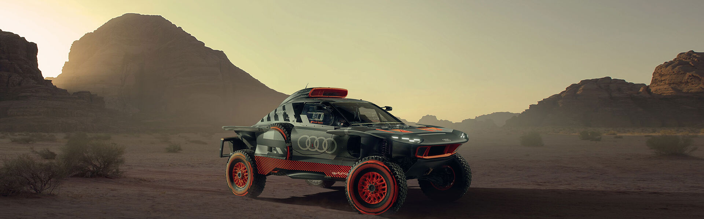
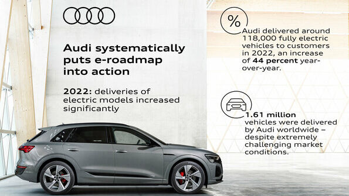
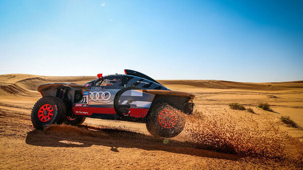

Audi la Raliul din Dakar
Eforturile au dat roade: echipa Audi Sport a marcat până la final ediția de anul acesta a Raliului Dakar, prin inovație și prin performanțe avansate și în ciuda impedimentelor. Automobilul electric de curse Audi RS Q e-tron a repurtat un total de 14 locuri pe podium la etape în cele 15 zile de concurs, inclusiv prologul. Mai mult, în premieră, piloții prototipului Audi au condus timp de 3 zile raliul din Arabia Saudită.
Oliver Hoffmann, membru al Consiliului de Administrație AUDI, responsabil pentru Dezvoltare Tehnică a vizitat echipa în Arabia Saudită, în ultima săptămână a raliului și a confirmat numeroasele reușite ale echipei
"Inovatorul nostru Audi RS Q e-tron a intrat de la bun început într-un ritm excelent, de care a dat dovadă și la final. Din păcate însă am avut și ghinion în deșert și ne-am confruntat cu multe pene de cauciuc. În ciuda dificultăților însă, am sărbătorit totuși o sosire la final, datorită echipei noastre performante și extrem de motivate. Vom analiza acum toate aspectele. Obiectivul nostru a fost un loc pe podium, și ne menținem acest obiectiv, pentru că vom participa cu siguranță din nou în 2024." După a doua participare a mărcii Audi la Dakar, Rolf Michl, Designerul Motorsport Audi a tras la rândul său concluziile experienței ce a prilejuit echipei sentimente amestecate: "Am trecut prin numeroase situații extraordinar de bune, dar și extraordinar de neplăcute la această ediție a Raliului Dakar. Rezultatele de vârf în clasificările zilnice ne-au arătat că suntem printre cei mai rapizi concurenți, cu inovatorul nostru RS Q

Audi a livrat în 2022 peste 100.000 de automobile electrice
În 2022, Audi a reușit din nou să își crească semnificativ livrările de automobile electrice. Creșterea cu 44% a numărului de automobile electrice livrate se datorează continuării sistematice a strategiei de electrificare a mărcii. Astfel Audi a reușit să își mențină traiectoria și pe parcursul anului trecut, deși 2022 a fost un an caracterizat de profunde crize globale.
Per total, Audi a vândut peste 1,61 milioane de autovehicule anul trecut, o cifră apropiată de cea a anului anterior, în ciuda crizelor prelungite din aprovizionare și a provocărilor majore din lanțul logistic. În 2022, Audi a întrecut rezultatele anului 2021 în Europa și în Germania, precum și pe alte piețe esențiale pentru marcă.
"Rezultatele excelente repurtate de modelele noastre 100% electrice ne arată că am ales drumul corect orientându-ne spre mobilitatea electrică," a declarat Hildegard Wortmann, Membră a Consiliului de Administrație AUDI AG, responsabilă pentru Vânzări și Marketing. Per total, Audi a livrat clienților 118.196 de autoturisme electrice, ceea ce reprezintă un plus de 42,8% față de anul trecut.
Cererea mare manifestată pentru modelele electrice Audi Q4 e-tron, Audi e-tron GT quattro și Audi e-tron confirmă decizia clară a companiei de a se orienta spre un viitor 100% electric și propulsează Audi cu avânt și mai mare pe calea sa spre ținta strategică de a deveni un furnizor de mobilitate premium sustenabilă. Astfel, un nou model așteaptă deja să circule în curând pe drumuri: noul Audi Q8 e-tron este pregătit să continue succesul poveștii Audi e-tron. Modelul încă nelansat pe piață a înregistrat deja numeroase precomenzi, deși premiera sa este planificată abia pentru primăvara anului 2023. Începând cu anul 2026, Audi va lansa exclusiv automobile 100% electrice pe piața internațională.
"În mediul acesta extrem de dificil și dinamic, echipa noastră internațională și-a demonstrat și în 2022 capacitatea avansată și puterea," a rezumat Hildegard Wortmann. "Datorită spiritului de echipă extraordinar, a capacității operaționale excelente și a gestiunii eficiente a vânzărilor, am reușit să încheiem și acest an cu succes."

Audi Sport rămâne motivată
Prima jumătate a Raliului Dakar 2023 a fost prilejul unui adevărat carusel al sentimentelor contradictorii pentru echipa Audi Sport: cele două victorii de etapă și primele trei zile în care Audi RS Q e-tron a condus cel mai dur raliu din lume au fost puse în umbră de dificultățile întâmpinate de toate cele trei echipe Audi de piloți.
După prolog, clasamentul era condus de Mattias Ekström/Emil Bergkvist, iar apoi Carlos Sainz/Lucas Cruz au fost în următoarele două zile pe primul loc. Dar diferitele avarii din etapele mai dure i-au aruncat mult înapoi. Stéphane Peterhansel/Edouard Boulanger au fost pe locul doi după a patra etapă specială, dar, din cauza unui accident, au ieșit din joc două zile mai târziu.
Raliul Dakar 2023 a surprins participanții cu mari dificultăți și a cauzat numeroase turbulențe în clasificări. Terenul pietros de după prolog a cauzat echipei Audi Sport 14 pene de cauciuc în 4 etape consecutive, începând cu prima zi a anului. Toate cele trei automobile Audi RS Q e-tron din concurs au suferit avarii. În a cincea etapă, secțiunile cu iarba cămilei au cauzat compresii puternice, solicitând astfel enorm mașinile de raliu, dar și pe piloții de la bord. Și, apoi, ploaia a făcut ca nisipul să se întărească neașteptat de mult și a forțat și o schimbare de rută. Din cauza unei stații inundate, organizatorii au introdus o etapă de semi-maraton cu o modificare de rută și cu service limitat, înaintea zilei de pauză, din 9 ianuarie.
Eficiență crescută, autonomie mărită
Producătorul de automobile premium din Ingolstadt a deschis era mobilității electrice în 2018, lansând modelul Audi e-tron*, ce constituie punctul de plecare al viitorului electric al mărcii cu patru inele. Și de atunci, modelul acesta definește reperele și standardele în segmentul SUV-urilor electrice de lux.
SUV-ul crossover electric din vârful gamei impresionează cu sistemul său de propulsie optimizat, plus caracteristici aerodinamice rafinate, încărcare optimizată și o capacitate mărită a bateriei, la care se adaugă și autonomia crescută la până la 582 kilometri (conform WLTP) pentru versiunea SUV și la până la 600 de kilometri (conform WLTP) pentru varianta Sportback.
* Valorile generice privind consumul de combustibil/electric și emisiile pentru toate modelele menționate, conform dotărilor disponibile pe piața din Germania, sunt indicate în lista de la finalul acestui comunicat de presă.)entru acest automobil sunt disponibile exclusiv valorile WLTP pentru consum și emisii. Nu sunt disponibile și valorile NEDC. Acolo unde datele pentru consumul de combustibil și emisiile de CO₂ sunt comunicate ca intervale, consumul și emisiile variază în funcție de specificațiile automobilului.
Audi activesphere concept
Audi activesphere concept: Audi este pe cale să prezinte următorul membru al familiei sale Sphere, formate din patru prototipuri. Coupe-ul crossover își va sărbători premiera mondială în cadrul evenimentului "Celebration of Progress" din 26 ianuarie 2023
Oliver Hoffmann, membru al Consiliului de Administrație AUDI, responsabil pentru Dezvoltare Tehnică a vizitat echipa în Arabia Saudită, în ultima săptămână a raliului și a confirmat numeroasele reușite ale echipei
Audi activesphere concept este sursa libertății depline, fiind însoțitorul perfect pentru aventurile ambițioase în natură. Fie sporturi acvatice, schi, golf sau drumuri dificile de munte: prototipul Audi activesphere concept asigură variabilitate și flexibilitate fără egal, pentru toate activitățile. Automobilul îmbină eleganța extraordinară cu performanțele excelente în off-road, iar tehnologia sa de comunicare creează experiențe unice, ce se continuă și în afara automobilului. Cei patru membri ai familiei Sphere se numesc skysphere, grandsphere, urbansphere și activesphere și întruchipează viziunea Audi asupra mobilității premium a viitorului. Calitățile comune celor patru modele nu sunt reprezentate doar de designul fascinant, ci și de sistemul electric de propulsie și de conceptul de ansamblu special configurat pentru condusul autonom